ABOUT
关于 罗湛
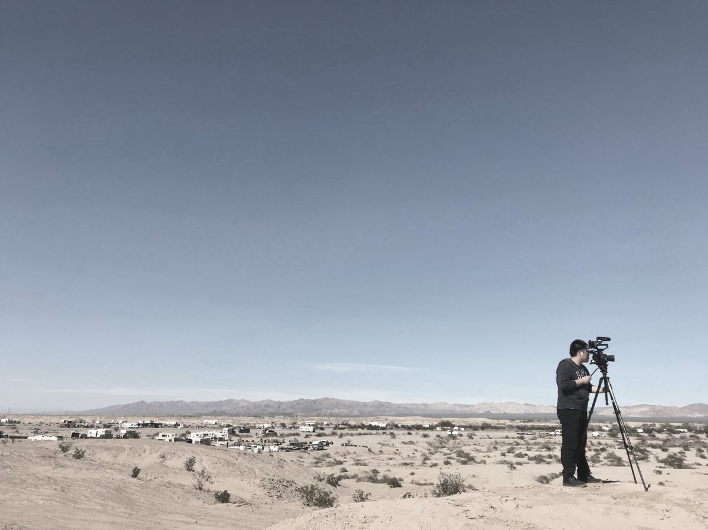
纪录片工作照 · 拍摄现场罗湛，独立纪录片导演、南京传媒学院讲师、南京新媒天文化传媒有限公司创始人。
从事纪录片、广告与影视内容创作 十余年，执导作品超过 100 部，服务高校、政府机关与品牌客户 30+ 家。
作品曾获多项国内外电影节大奖与提名，并在 CCTV 中央电视台、日本 NHK 电视台、亚洲电视、江苏卫视等机构播出。
他既是一位创作者，也是一位教育者——在镜头背后持续观察世界的同时，也回到课堂，把第一线的经验传递给年轻一代。
“人们都期待重要的成就，却忘了什么是自己。” —— 罗湛作品《谁还记得逍遥游》导演阐述
- 2014正式从业
- 100+纪录片 / 广告 / 宣传片
- 30+合作机构
- 多项国际电影节荣誉
CAREER PATH
从课堂到剧组
三个阶段的同一个人
-
高校任教 · EDUCATION
南京传媒学院 · 讲师
主讲专业核心课程
- 导演基础 —— 镜头语言与现场调度
- 编剧基础 —— 故事结构与人物塑造
- 短片制作 —— 从剧本到成片的全流程训练
- 专业选修课国际电影与电视节目贸易
-
导演从业 · DIRECTING
中国电视有限公司 CCTV 北美 · 导演
纪录片导演、剪辑、编剧
- 系列短纪录片节目《美梦美谈》（导演 / 剪辑）
- 旅行纪录片《酒旅福尼亚》（导演 / 编剧）—— 探访加州 9 个葡萄酒产区
- 纪录片《飞跃大湾区 —— 纽约篇》（统筹规划）
- 参与央视北美对外影片投资的调研与谈判工作
-
创业 · FOUNDING
南京新媒天文化传媒有限公司 · 创始人
公司创办于 2014 年
- 带领团队获得天使轮投资，并获国有投资机构“紫金创投”注资
- 制作超过 100 部纪录片、广告、宣传片
- 合作单位 30+，服务高校、政府机关与品牌客户
- 作品在央视、日本 NHK、亚洲电视、江苏卫视播出
SELECTED WORKS
代表 作品
超过 100 部作品的缩影——这里精选了由罗湛导演、编剧或统筹的代表项目， 涵盖纪录片、商业广告 TVC、微电影、AI 动画等不同形态。
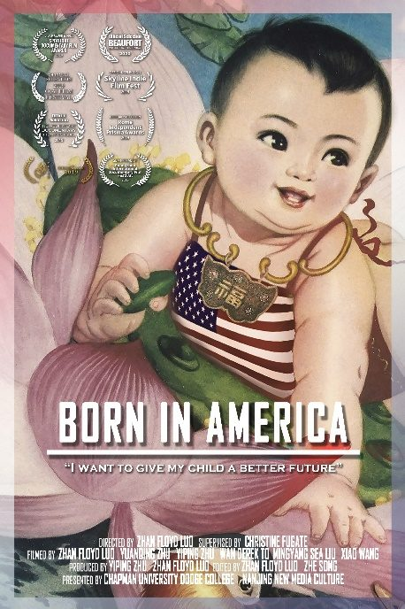
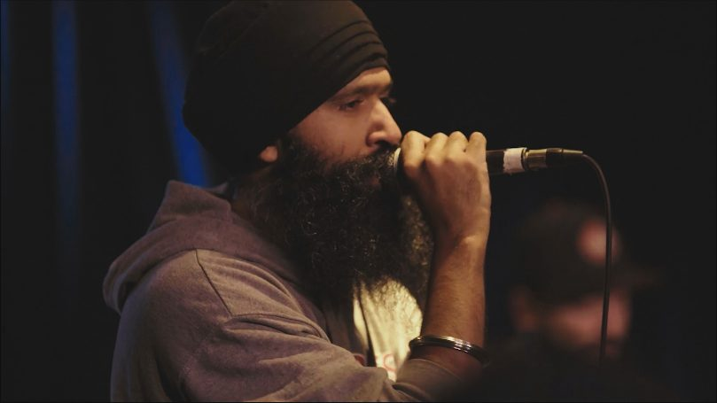
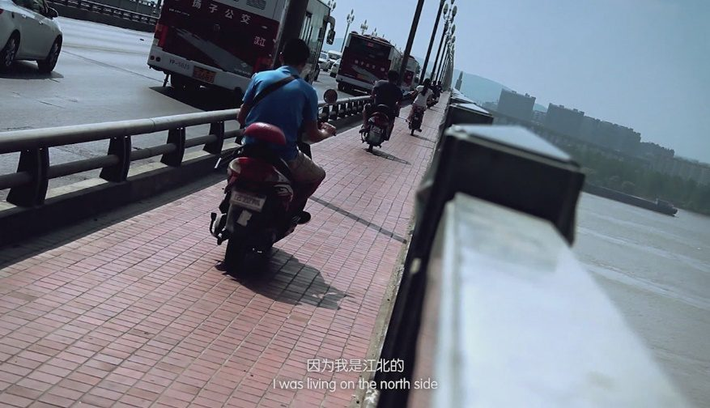
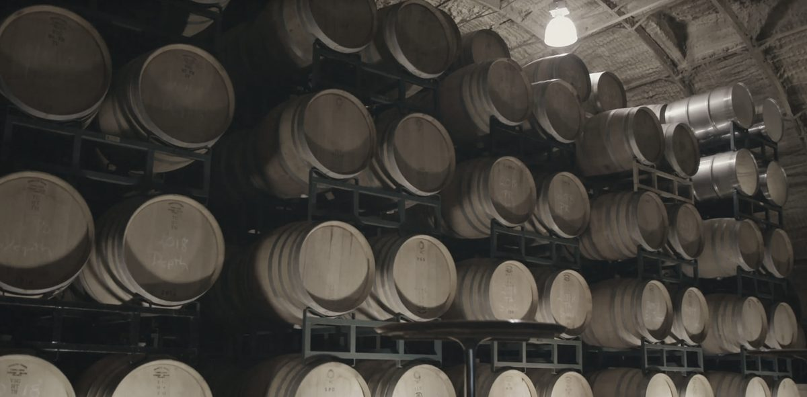
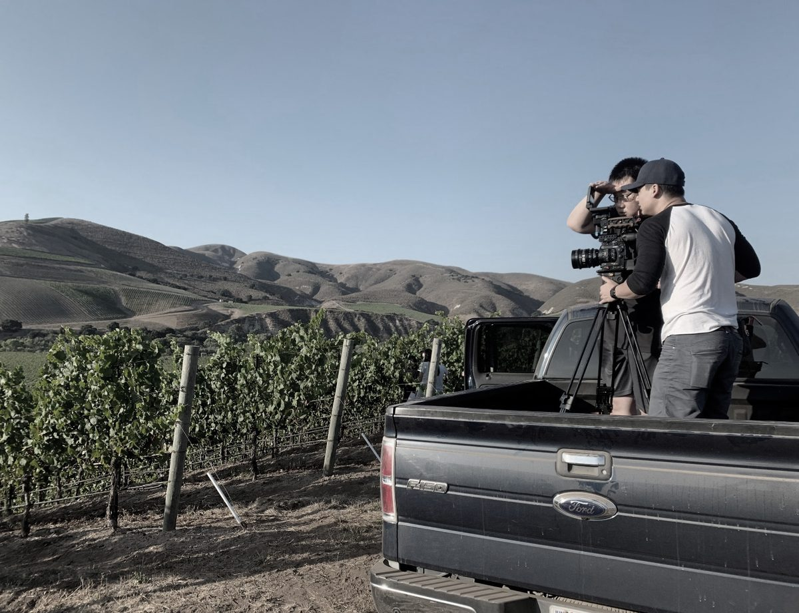
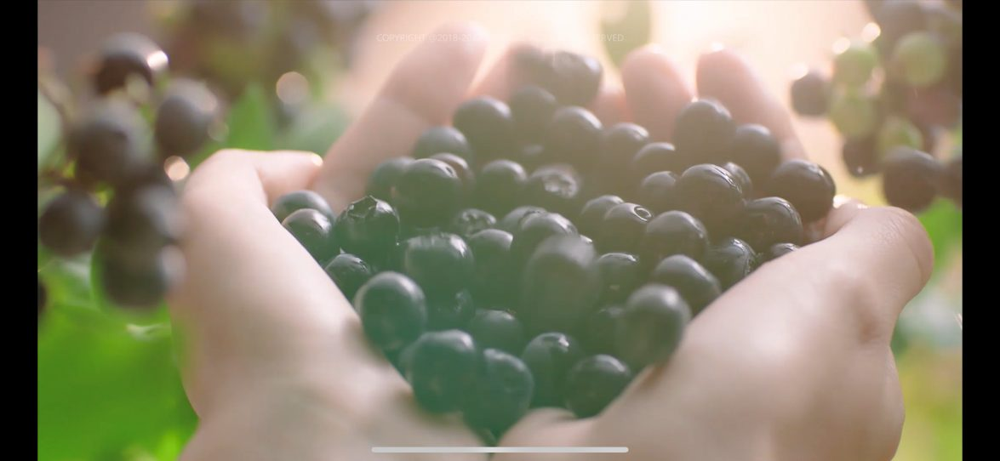
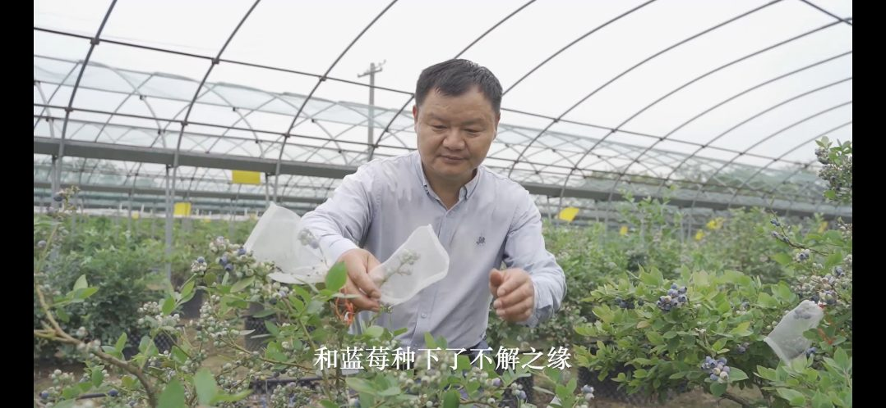
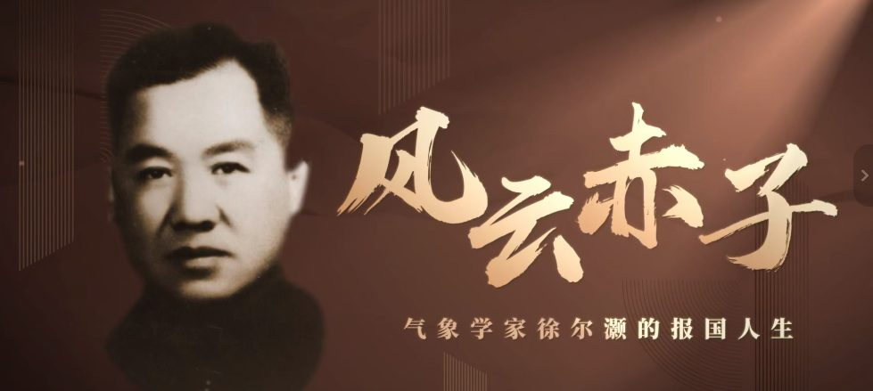
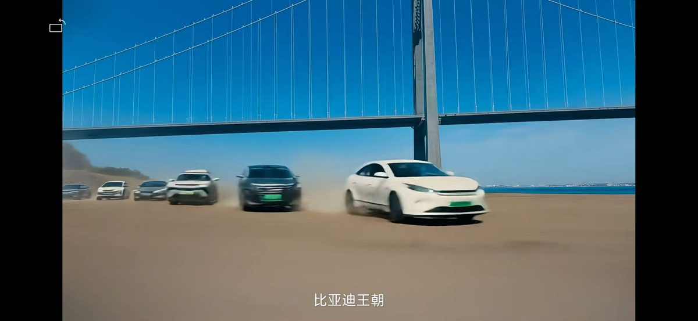
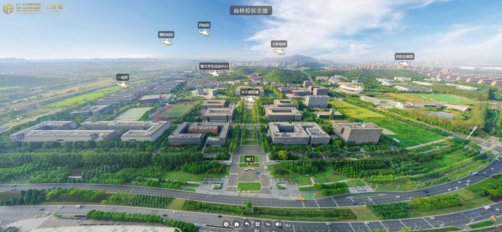
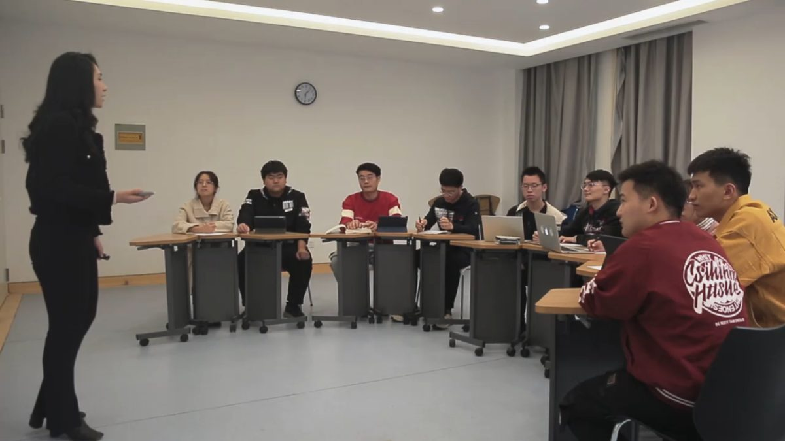
📺 电视剧/纪录片《酒旅福尼亚》预告：Bilibili 链接 ｜《谁还记得逍遥游》：Bilibili 链接
TEACHING
在南京传媒学院
授业解惑
把第一线的实战经验带回课堂——罗湛是创作者，也是教育者。
专业核心课
导演基础
镜头语言、现场调度、表演指导——从文本到画面的第一课。
专业核心课
编剧基础
故事结构、人物塑造、节奏控制——讲一个值得被听见的故事。
专业核心课
短片制作
从剧本到成片的全流程训练，强调实战与团队协作。
专业选修课
国际电影与电视节目贸易
国际影视产业的运作机制、合拍与发行、跨文化传播。
AFFILIATIONS & REACH
作品 去向 & 合作机构
作品曾在以下平台与影展播出；长期合作的伙伴包括高校、政府机关与品牌客户。
播出平台 / RELEASE
- CCTV 中央电视台
- 日本 NHK 电视台
- 亚洲电视
- 江苏卫视
- Bilibili
高校 / UNIVERSITIES
- 南京大学
- 山东大学
- 南京农业大学
- 扬州大学
- 江苏科技大学
- 泰州学院
- 南京江锐集团
政府与机构 / INSTITUTIONS
- 江苏广播电视总台
- 南京鼓楼区政府
- 丹阳高新技术开发区
- 美国亚洲协会
合作品牌 / BRANDS
- 比亚迪 · 五菱 · 海澜之家
- 三元乳业 · 携程旅行
- 药石科技 · 南大环境
- Insta360 · 济南冶金 · 山东钢铁
CONTACT
希望与你 合作
欢迎高校、影展、品牌方与纪录片项目建立合作。
Open for lectures, festivals, brand films, and documentary commissions.
合作形式
纪录片项目 · 商业广告 TVC · 高校讲学 / 工作坊 · 微电影 · AI 动画 · VR 全景
所在地
中国 · 南京
主要身份
南京传媒学院 讲师 / 南京新媒天文化传媒 创始人
联系方式
请通过学校或公司邮箱、微信与我们联系，期待倾听您的故事。